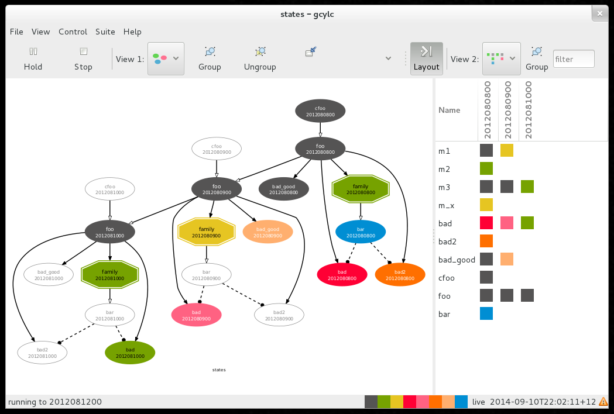

2. Cylc Screenshots¶

Fig. 11 gcylc graph and dot views.

Fig. 12 gcylc text view.

Fig. 13 gscan multi-suite state summary GUI.

Fig. 14 A large-ish suite graphed by cylc.
Fig. 11 gcylc graph and dot views.
Fig. 12 gcylc text view.
Fig. 13 gscan multi-suite state summary GUI.
Fig. 14 A large-ish suite graphed by cylc.